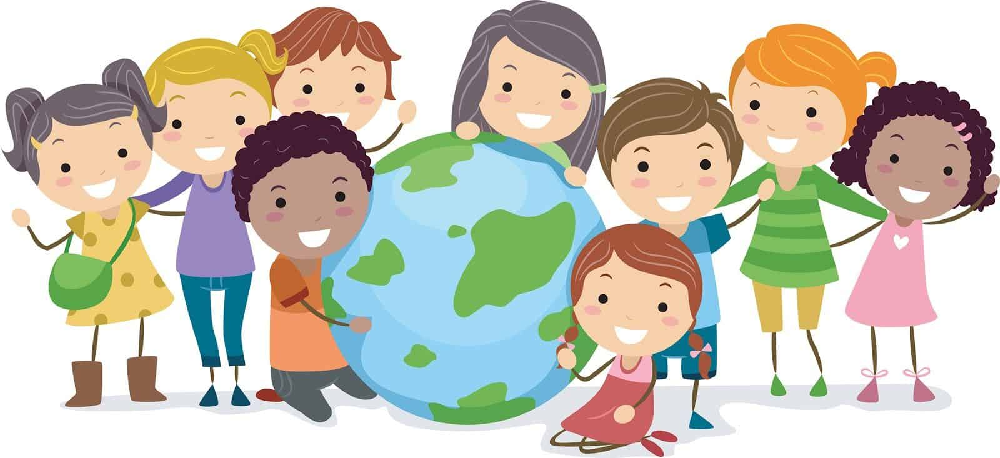
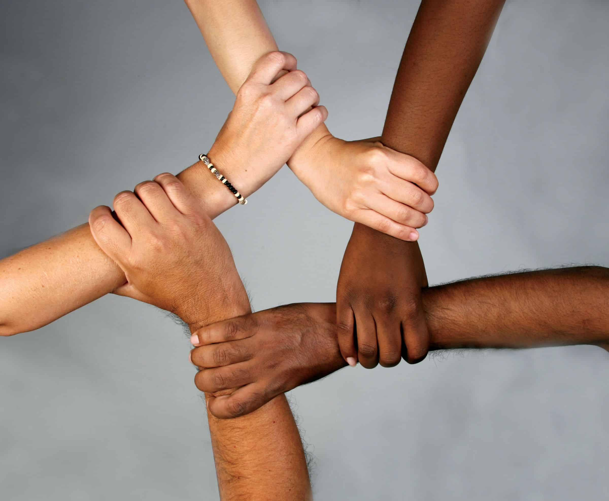

La cultura es una manifestación de la identidad y las tradiciones de una sociedad. Abarca una amplia gama de aspectos, incluyendo el arte, la música, la literatura, la gastronomía y mucho más. Cada cultura tiene sus propias características únicas que la distinguen y enriquecen la experiencia humana.
La diversidad cultural es un valor importante en nuestro mundo globalizado. A través de la interacción entre diferentes culturas, podemos aprender y apreciar las diferencias, lo que nos enriquece a nivel personal y nos ayuda a construir puentes de comprensión y respeto mutuo.

